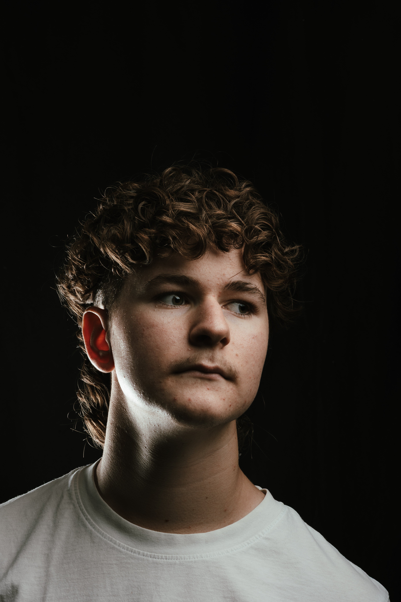
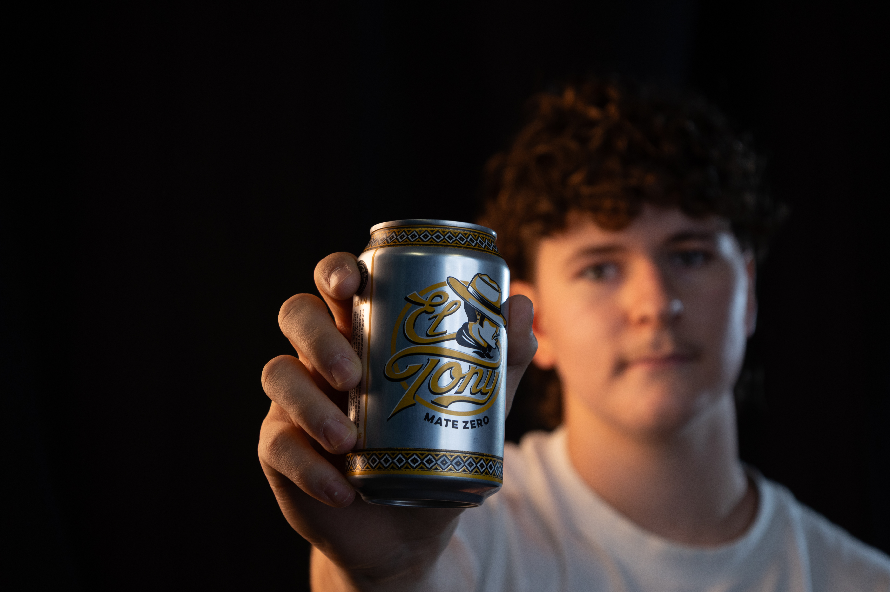
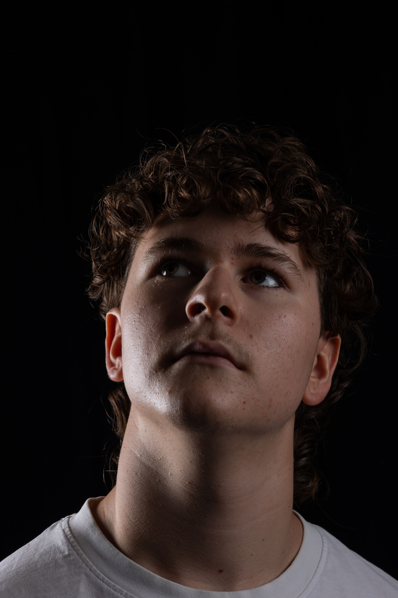
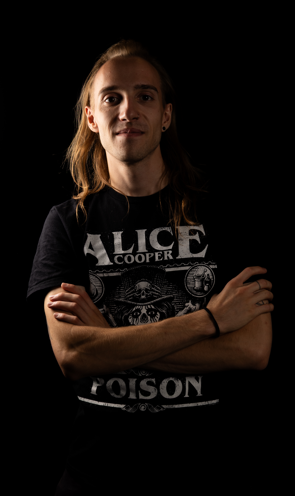
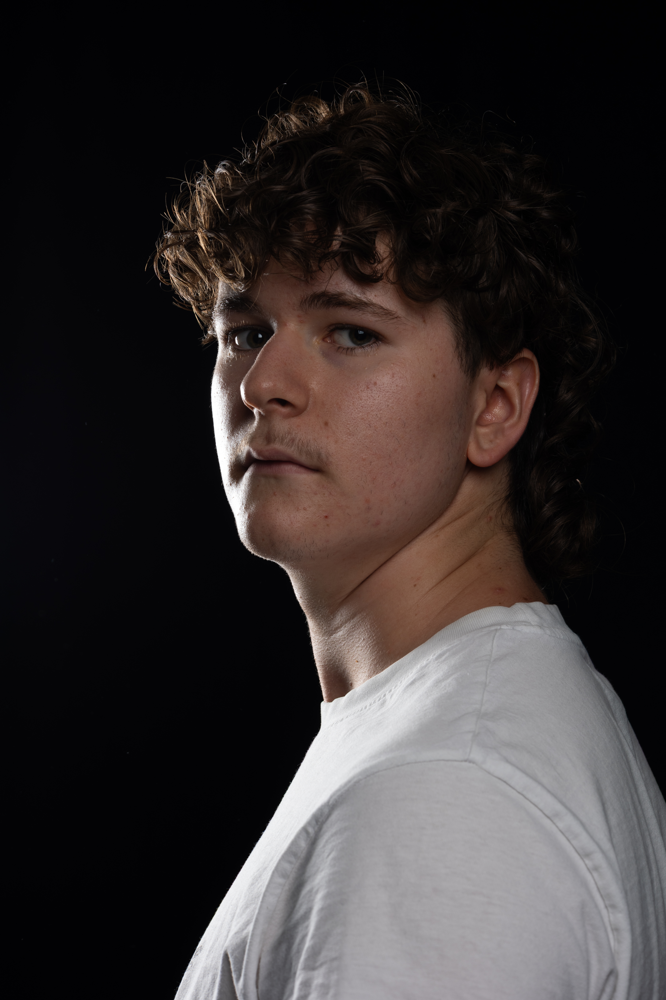
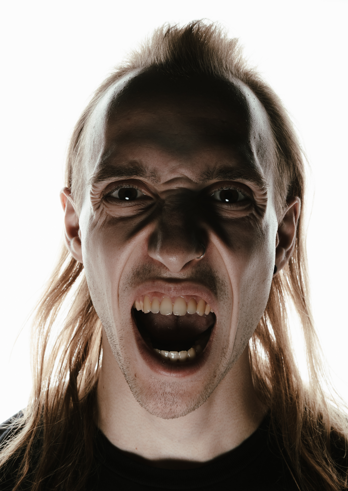
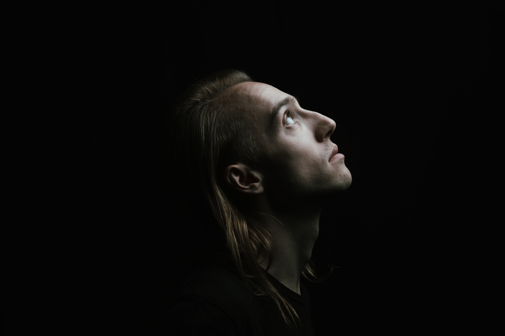
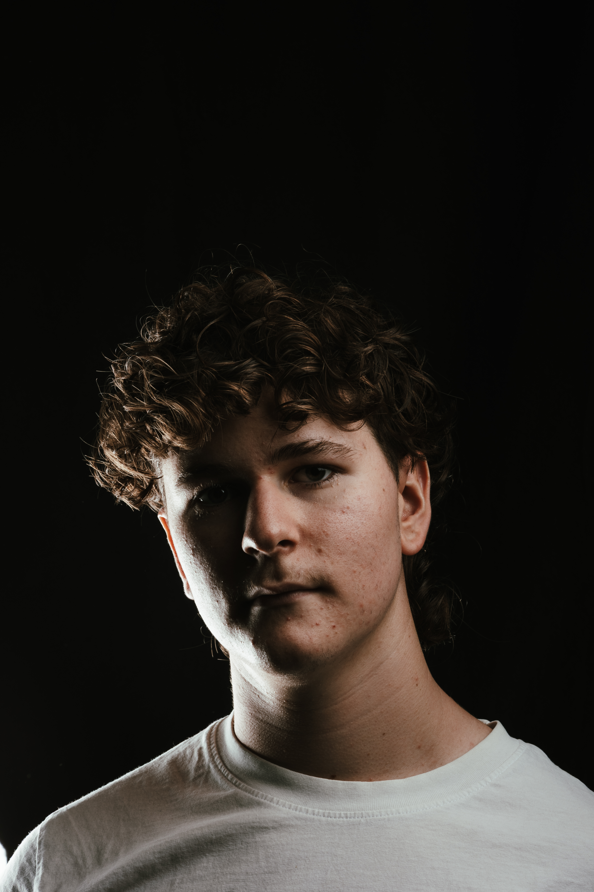
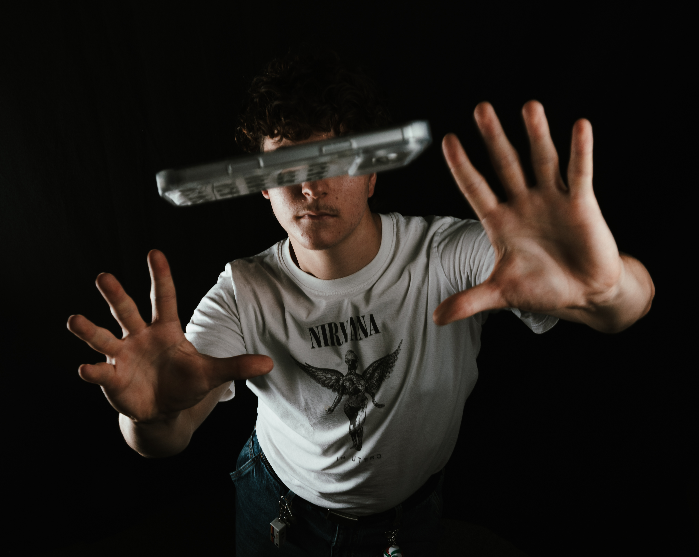
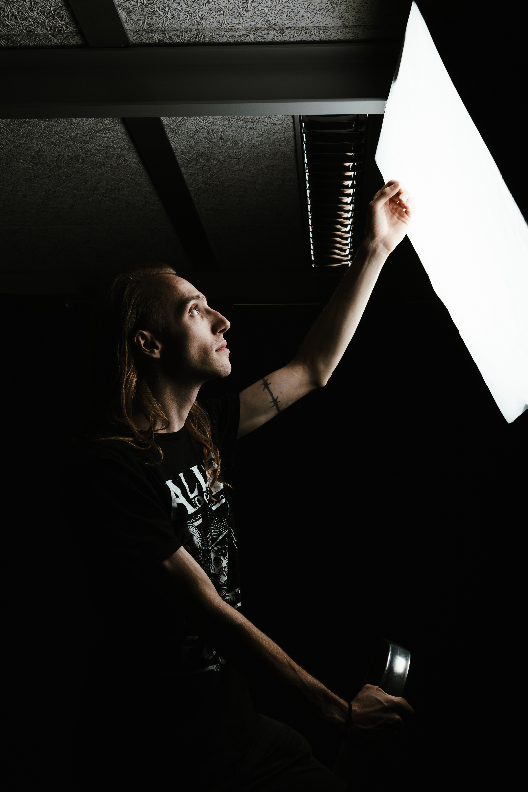

01 / photography / 16.09.2026
Portrait
Shooting.
Wir konnten mit Blitz und Licht experimentieren und dabei verschiedene Einstellungen ausprobieren. Unser Ziel war es, komplett unterschiedliche Porträts zu erstellen, die jeweils eine andere Stimmung und Wirkung vermitteln.
Dabei konnten wir sehen, wie stark Licht und Schatten die Wirkung eines Bildes verändern können.
behind the scenes ↓










behind the scenes / 16.09.2026
behind
the frame.